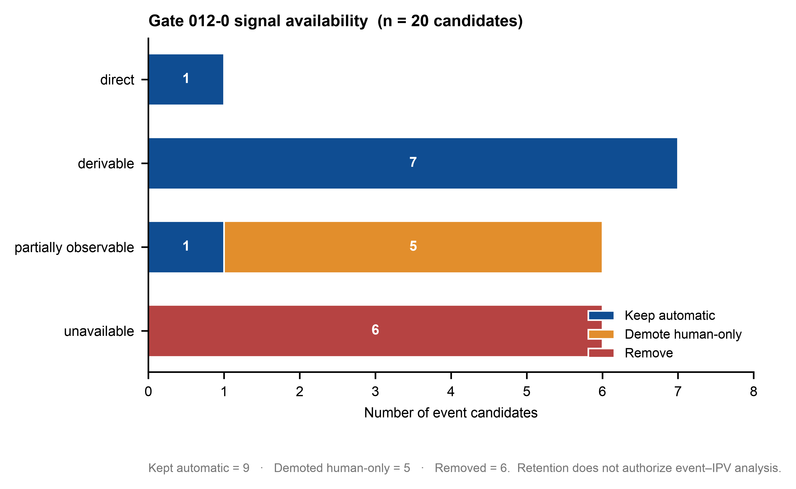
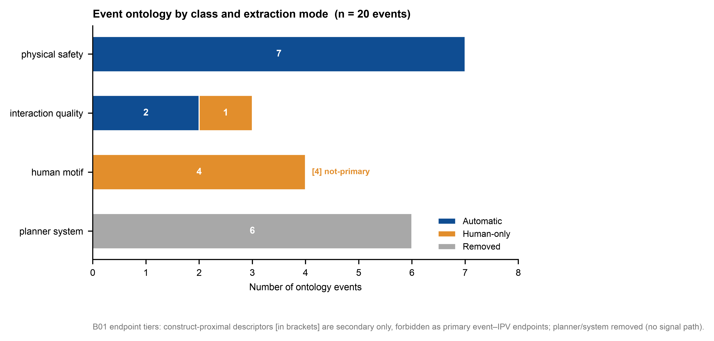
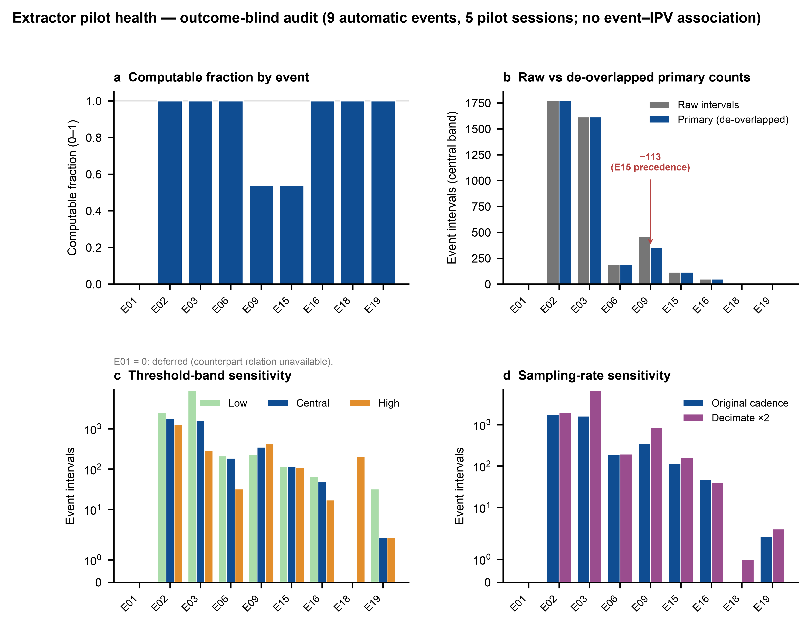
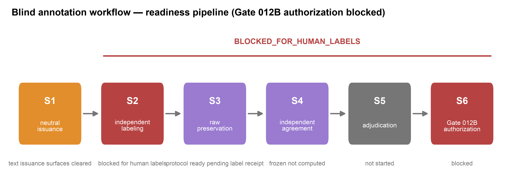
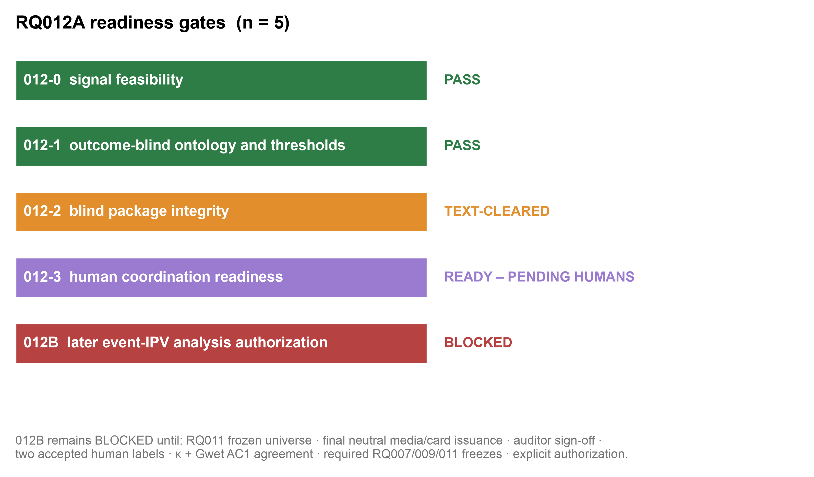

一、这件事到底在干嘛
一句话:这一轮不是去得出结论,而是去"造好并验干净一把尺子",为日后真正的因果分析做准备。
整个研究的远期目标(留到后续 RQ012B 才做)是回答一个问题:
当一辆车的"社会性"(IPV)偏离正常——要么太争抢、要么太退让——时,是不是真的会在现实交互中引发可观察的坏后果(对方急刹、僵局、来回拉锯、险情)?
要回答它,你需要一把独立于 IPV 本身的尺子来量"后果"。这把尺子由三部分组成:事件定义(什么算"急刹/险情/僵局")、自动提取器(从轨迹数据里把事件抓出来)、人工标注材料(让真人来打更主观的交互标签)。
本轮(RQ012A)只允许把尺子造好、检查干净、准备到"可以让两个真人开始标注"为止。明确不允许真的去算"事件和 IPV 的关系",更不允许编造人工标签。
二、核心问题与"独立尺子"为什么难
难点在于尺子很容易"从根上就歪了"。本轮独立审查 + 红队重点防住了四类隐患:
| 隐患 | 通俗说法 | 处置 |
|---|
| 循环论证 | 用"侵略性抢行"这种本质就在复述 IPV 的标签当后果 → 等于用 A 证明 A | 已防 终点资格分层 |
| 结果泄漏 | 挑数据/定阈值时偷偷用了和答案相关的信息 → 尺子照着答案刻 | 已防 outcome-blind + 双轨 |
| 流程后门 | 最终授权门漏检几项,未来可"合规地"绕过质检直接发布 | 已防 门链式收紧 |
| 伪造/绕过人 | 用模型标签或复制文件冒充双人标注 | 已防 不可绕过 + merge 拦截 |
结论:这四道核心防线在最终红队中均判为"干净(未发现可利用漏洞)"。
三、整体怎么做的
全程由 Claude 仅作编排控制器、所有实质工作交给 Codex CLI 完成,执行者与复核者严格分离(每次审查/红队都用全新会话),共派发约 20 个 Codex worker,跨越 14 个阶段。关键检查点:
质量门(Gate)
- 012-0 信号可用 PASS
- 012-1 阈值 outcome-blind PASS
- 012-2 盲包完整 文本面 cleared
- 012-3 人类协调就绪 就绪·待真人
- 012B 后续分析授权 BLOCKED
独立验证
- 提取器测试 30/30 通过
- 鲁棒性回归 5/5 通过
- merge 拦截测试 12/12 通过
- 计划复审 / 盲包复审 / 最终审查 均 CLEARED/PASS
- 图表经 nature-figure skill 渲染(15 个文件)
四、图1:哪些事件能自动测,哪些只能交给人

图1 · 信号可用性与 Gate 012-0 处置(共 20 个候选事件)。横条按"信号类别"堆叠,颜色表示门处置:保留自动 / 降级人工 / 移除。
我们对 20 个候选事件逐一审了"数据里到底有没有能测它的信号"。结果:
- 9 个保留为自动:急刹、高减速、高 jerk、来回停走、险情(near miss)、几何接触、无进展超时、紧急停车候选、横向不适——都是运动学/几何后果,概念上独立于 IPV。
- 5 个降级为"只能人工判":被迫让行、让行角色反转、不必要停车、冲突升级、对非交互方让行——因为数据里没有车道/路权/语义上下文,机器无法判定"是不是被迫""有没有路权"。
- 6 个移除:安全控制器介入、规划器回退、重规划、轨迹拒绝、任务失败、人工接管——数据里只有没有字典的通用数值状态码,诚实地不臆造语义。
诚实之处:"几何接触"只作为几何代理保留,不冒充"传感器确认的碰撞";"紧急停车"只作为运动学候选,不冒充"显式急停指令"。
五、图2:事件本体怎么分类,以及怎么防循环论证

图2 · 事件本体:按类别 × 提取方式。每条横条按提取方式分段(自动/人工/移除);标 [n] not-primary 的是"构念近邻"标签。
本体把事件分成四类:物理安全、交互质量、规划器/系统、人类主观母题。最关键的设计是 B01 终点资格分层:
| 层级 | 含义 | 能否当"主验证终点" |
|---|
| 独立后果终点 | 与 IPV 构念概念可分(急刹、险情、僵局…) | 可以 |
| 构念近邻描述符 | 语义上复述了争抢/退让(aggressive intrusion、over-yielding/freeze…) | 禁止 仅作次级背景 |
这样就堵死了"用'侵略性抢行'去验证'IPV 偏争抢'"这种自欺式循环。图中 4 个被标 not-primary 的人类母题正是被锁住的部分。
六、图3:自动提取器的"体检报告"(不是结论)

图3 · 提取器 pilot 健康审计(9 个自动事件,5 个 outcome-blind 样本 session;全程未做任何 event–IPV 关联)。a 可计算率;b 原始 vs 去重后主计数(hero);c 阈值敏感性;d 采样率敏感性。
这一步只做"体检",不下结论。我们在小样本上跑了提取器,只报告数据健康指标:
- 可计算率:E02/E03/E06/E16/E18/E19 ≈ 1.0,险情/接触 ≈ 0.999;E01(对方急刹)= 0,因为缺"对手方关系"冻结——诚实地不硬凑。
- 去重(面板 b,重点):险情 E09 的原始 463 个区间,经"接触优先于险情"规则去重后,主计数降到 350(抑制 113 个被同一物理时刻重复计数的)。这正是红队 V05 指出、随后修复的关键。
- 敏感性:jerk(E03)对降采样高度敏感、紧急停车(E18)对类别化刹车阈值高度敏感——都已明确记录为后续注意点。
独立质检:提取器独立测试 30/30、鲁棒性回归 5/5 全部通过(由我亲自复跑确认);此前发现的"不可能值(负速度)泄漏进事件"缺陷已修复闭合。
七、图4:盲标注流水线走到哪了

图4 · 盲标注就绪流水线。S1 中性签发(文本面已 cleared)→ S2–S5 标注/保存/一致性/裁决(均 BLOCKED_FOR_HUMAN_LABELS)→ S6 Gate 012B 授权(blocked)。
流水线已经备好材料、并在 S1 把"标注者可见的文本/签发面"做到泄漏干净,但刻意停在真人标注之前:
- 要求至少两名真正独立的人类标注者,互不可见彼此结果;原始标签永久保存(只增不改);
- 一致性统计在看到结果之前就已冻结:主用 Cohen's κ、辅以对患病率稳健的 Gwet AC1;
- 合并管线已用对抗样本证明能拒绝:空表、复制文件、模拟标签、错 ID、缺字段、身份泄漏,并把"近重复/疑似合谋"隔离待审;
- 在两份真人标签到位前,状态不可绕过地保持 BLOCKED_FOR_HUMAN_LABELS。
五、图5:五道就绪门的最终状态

图5 · RQ012A 就绪门状态(共 5 道)。颜色与文字双重编码:PASS / 文本面 cleared / 就绪·待真人 / BLOCKED。
这是全局的"红绿灯":前两道全绿(信号可用、阈值干净),第三道黄(文本面已干净、媒体卡片签发待后续),第四道待真人,最后的总授权门 012B 仍红。这与本轮"只做就绪、不做分析"的定位完全一致。
八、最重要的发现与判断
① 一个方向性的科学发现
OnSite 回放日志只支持运动学/几何后果事件(急刹、险情、停走、横向不适……),不支持自动的语义交互角色事件(被迫让行、路权反转——缺车道/路权/地图),也不支持规划器内部事件(回退、重规划、接管——只有无字典的状态码)。这意味着 RQ012B 的自动"后果尺子"只能建立在运动学/几何事件上,语义类后果只能靠人工标注。
② 三处关键把关(其中两处经你拍板)
- 计划层阻塞:独立审查发现循环论证、阈值泄漏、门后门三处硬伤 → 你拍板用"绑定附录"修复;阈值修复采纳你的"双轨(探索贴标隔离 / 定案冻结防泄漏)+ 防火墙"而非一刀切。
- 既有 RQ003 盲包泄漏:不动他人产物,在本运行内重建了泄漏干净、可复现的签发包;com.apple.provenance 系统级不可剥离 → 诚实记录 + 用 zip 内容封装保证收件方不携带源主机信息。
- 红队 MAJOR 全部修复并复验:跨事件去重(V01/V05)、配对时间戳(V03)、actor 身份稳定(V04)、merge 近重复合谋筛查(V08)。
九、边界、局限与下一步
这把尺子不是"完全独立的真值"。它基于同一份观测到的轨迹行为,只能称为outcome-blind 的行为参照。报告全程避免"ground truth"措辞,也未做任何因果或 event–IPV 关联。
本轮到此为止。要进入 RQ012B 的正式 event–IPV 分析,必须先满足以下全部 BLOCKED 依赖:
- RQ011 冻结分析全集与运行标识
- 最终中性媒体/案例卡片签发 + auditor 签名
- 两份真正独立的人类标注
- 按冻结协议计算 κ + Gwet AC1 一致性
- RQ007(可估性起点)/ RQ009(偏差定义)/ RQ011 的冻结
- Gate 012B 的显式授权记录